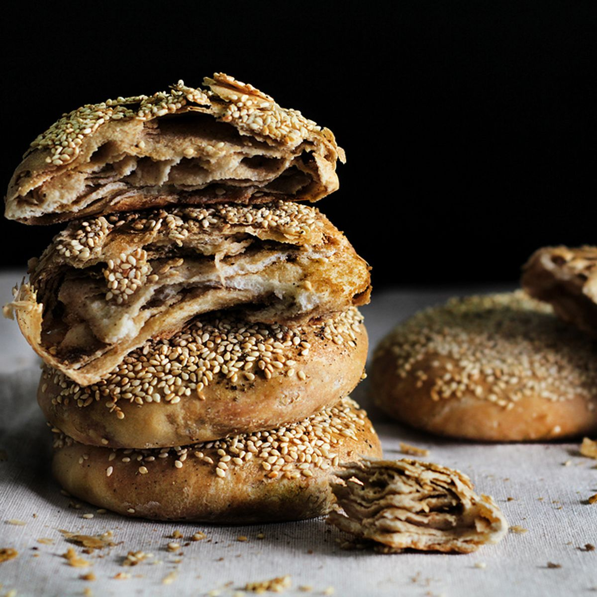

Shao bing is a popular street and breakfast food in Northern China and Taiwan. Traditionally, this Chinese flatbread recipe is baked, unleavened (no yeast, baking powder, or baking soda), and layered. Because it is plain bread, it can be enjoyed alone or with fillings. Shao bing is also enjoyed with other breakfast classics such as salted soy milk and Chinese crackers.
Meal prep time : 50 minutes
Servings : 8